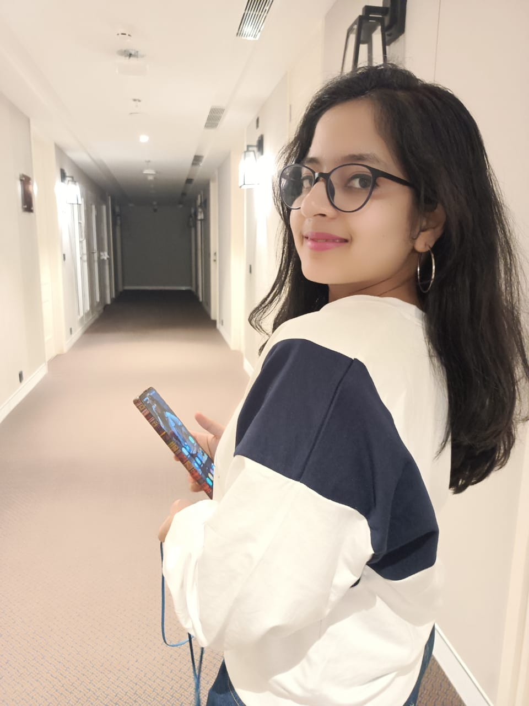

WELCOME TO MY PAGE.
Let me introduce myself. I am Sinjini Roy ,currently, pursuing Btech in Computer Science Engineering from NIT agartala.

You can follow me on:-
Instagram profile
Linkedln profile
Know more about me
My school
My college
An enthusiastic and active soul with an aspiration of exploring in software as well as web development, presenting myself through
my website. I aspire to achieve all my goals in life through hardwork and smartwork .
I was born in agartala, tripura. Check out my birthplace:
Birthplace
My birth details
My school life
I completed my schooling from SSRVM agartala under the blessings of Guruji Sri Sri Ravishankar ji.I spent 16years of my life there,
ended my journey in 2021. I always had good academic performance and continued that in Matricluation and Higher Secondary also.
Check out my academic scores and achievments:
School life
College life
My university life started at National Institute of Technology Agartala, in 2021 December . I am pursuing Btech in 2nd Year in Computer Science and
Engineering . In first year i managed to actively participate in college clubs as well as maintain a good cgpa of 9.61 grade out pf 10.
Check my scores :
College life
In case if any word is not understood: